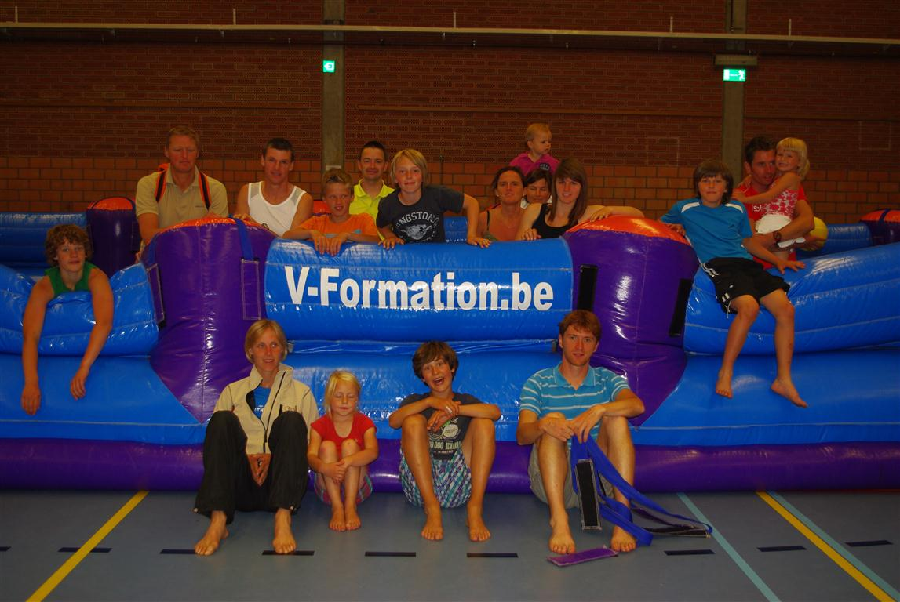

Nog wat moe van de Boerekreekse triatlon en het bezoek aan de Watervlietse kermis, vroeg papa Reggie nog op weg naar de Sentse sportzaal, “Waarom gaan we naar die familiedag?” De kids hebben wel 2 maanden vakantie te vullen hé. Algauw zaten we in een legercamion om gedropt te worden in Aardenburg, vanwaar we onze wandeltocht aanvingen, terug naar Sente via een route dwars door de weiden met grazende koeien en schapen. Bella de Koe bleek ons te begeleiden. ’t Was wel goed uitkijken geblazen voor alle koeievlaai en via hekjes en klimplankjes kwamen we in de schapenwei.
Een kwaaie boer stond ons op te wachten want volgens hem hadden wij zijn schaap laten ontsnappen. Dat beestje kon gewoon onder de prikkeldraad door naar de volgende wei! Na dit akkafietje, tijd voor een hapje en drankje voor groot en klein. Na de volgende wei, stond alweer een boer ons op te wachten, maar die wou slechts reisgids spelen.
Na de picknick, tijd voor wat activiteiten in de sportzaal. Drie gigantische opblaasbare attracties van V-Formation hebben ons een sportieve, spannende, uitdagende en evenwichtige namiddag bezorgd. Zowel de kids als de ouders hebben zich kunnen uitleven als team, individueel, al lopend, springend, duwend, balancerend, schoppend,... Tegen 16u werden sommige kindjes wel moe, maar moe en voldoen konden we vol lof terugdenken aan deze fantastisch, geslaagde familiedag.
Bedankt Michael, Annick, V-Formation, … !
Mama Chantal
(Bekijk ook de foto's in het album)